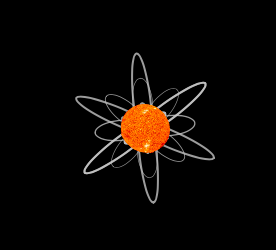
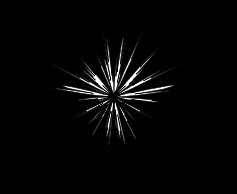

The design of 'Floral Fortune' will give a sensation of being related to the universe as it contains the main structure of the solar system: the Sun, elliptic orbit, star, and flowers (symbolize planets). The fortune generator will give the name of the flower, its symbolism, and visuals for the prophet. The esthetic visual flowers will help the user to visualize more clearly and reflect their understanding. This will also increase the creativity and colorfulness of the generator.
Type of Flowers
3 types of flowers: Daisy, Sunflower, and Aster flowers. They have unique visuals and symbolize different meanings. The movements and structures of the flowers have a meaning behind them, which can further represent the story of the flowers.
A white and pink daisy is a combination of two flowers that have blended together, which can symbolize love, adoration, and innocent. For the design, the daisy's structure and colors will give a sensation of authenticity and be lively. The movement of the petal will symbolize the action: enlarge- flower's blooming, shrink- flower's withering.

If compare the sunflower to the universe, it will represent as the Sun, which brings brightness, happiness, and optimism to humans. For the design, the sunflower's structure will give a sensation of comparison by using the Sun image to be the disk flower, the center of the sunflower, and 2 layers of orbit to be the petals that are located over each other. The movement of the petal will symbolize the continual orbit of the universe.

Regarding its star-like shape, 'Aster' is named after the Greek word that means star, which is also considered to be a sacred flower in ancient Greek culture. Aster flower can resemble the meaning of wisdom and faith. For the design, the sharp petal can represent the petal of the aster needle flower, and the movement of rotation will influence the overall appearance to be more attractive.